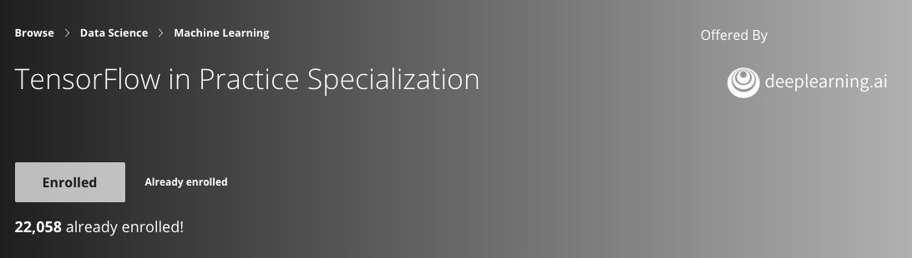
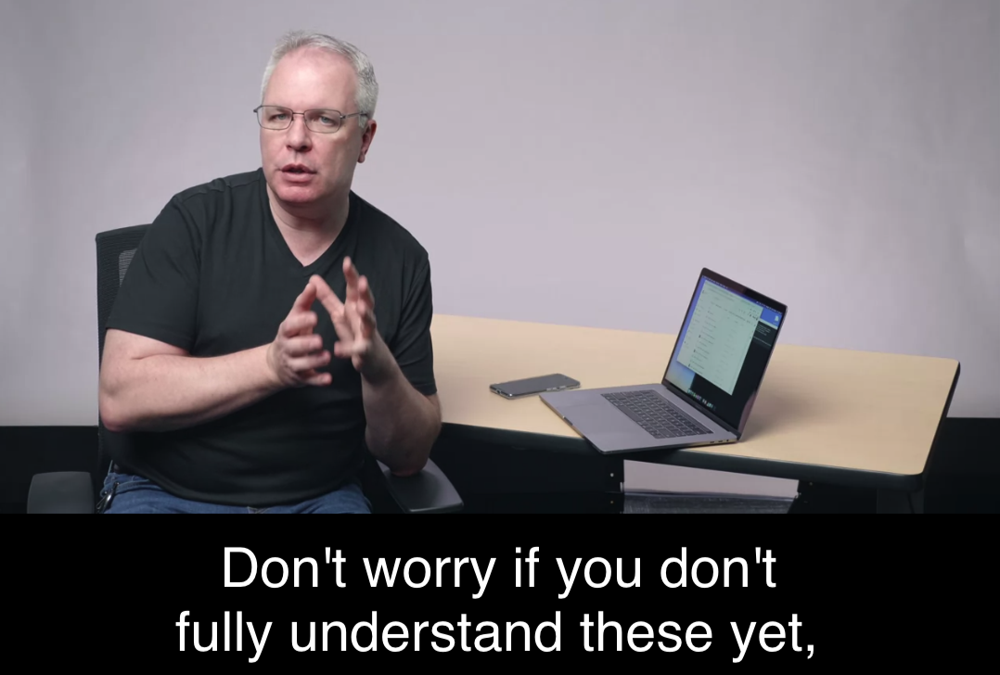

A thorough review of Introduction to TensorFlow for Artificial Intelligence, Machine Learning, and Deep Learning | deeplearning.ai

Structure of this review:
- Summary of this course
- The knowledge and skills covered in this course
- The relationship between this course and Deep Learning Specialization
- Is this your course?
- My subjective review of this course
This course is the first course in TensorFlow in Practice Specialization offered by deeplearning.ai. It is an introduction to TensorFlow as the course name implies it. Intermediate Level, and will lead you to dive into deep learning/ computer vision/ artificial intelligence.
The knowledge and skills covered in this course
- Learn best practice for using TensorFlow and theoretical foundation for computer vision.
- Build a basic neural network.
- Use convolutions to improve neural networks, including using pooling layer and dense layer.
- How to use google colab.
I would say deep learning specialization is somehow like a prerequisite for this course. If the students don’t know about deep learning, it would be a little bit hard to understand that the code is really doing. Because this course is more on practice but doesn’t cover too much theory foundations, for example, it wouldn’t teach you how to calculate the size of the conventions and pooling layers in detail, but the instructor will provide a link to a specific course. Let me illustrate this by example: in the week2 video, when Laurence Moroney taught using TensorFlow to build convolutional NN, he provided a link to a lecture in the fourth course of DeepLearningSpecialization.

Is this your course?
It is an intermediate level course. It requires students to have experience in Python coding and high school-level math. It says, “Prior machine learning or deep learning knowledge is helpful but not required.” However, from my point of view, the knowledge of deep learning is also required if you want to get understood what the codes are really doing. If you already finished DeepLearningSpecialization or you already know the fundamental theories in deep learning, but not familiar with TensorFlow, I would recommend this course to you; If you use PyTorch before and want to get your hand dirty with TensorFlow, I would recommend this to you; If you are an ambitious data enthusiast like me, I would definitely recommend this course to you too! If you are are interested in this course and searching the information about this course and, then don’t hesitate, this course is designed for you.
My subjective review of this course
Laurence Moroney’s teaching style is charming, not the same as your professor or other courses provided by Universities. Laurence just can make this course so funny. Besides, I love the talks between Laurence and Andrew at the beginning of every week’s lecture. The coding assignments are not challenging, and modesty aside, they are kind of easy for me ( I already finished Andrew’s Deep learning Specialization). Laurence also provided codes in google colab, and it just makes the learning process much more manageable, students can train and test the models in colab very quickly.
And as usual, you can find all materials of this course in my GitHub repo.